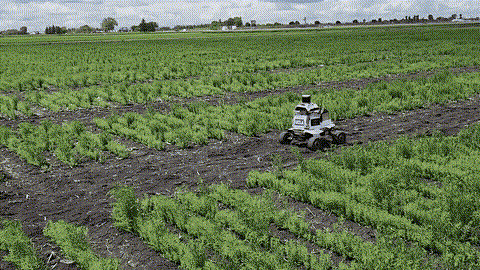

FARGO: Long-term Farm Deployment & Autonomous Dataset Collection


Deployed across open row-crop fields in Fargo, ND, the system pairs onboard autonomy with a lightweight field infrastructure: a Starlink terminal at the home station supplies internet connectivity for remote access and data offload, while the dedicated radio link gives the operator real-time visibility into robot state and location even at the far edges of the field, independent of cellular coverage.
On top of this hardware stack, the robot's Vision-Language Navigation module grounds natural-language instructions (e.g. "go to the irrigation pivot at the north end of row 12") in the live RGBD/LiDAR map, enabling instruction-following navigation without hand-authored waypoints for every task.
The robot is equipped with a sensor and compute suite designed for all-day autonomous operation in unstructured outdoor farmland:
- 4 × RGBD stereo cameras arranged for near-360° coverage, used for crop-row perception and close-range obstacle detection
- LiDAR for long-range obstacle detection and large-scale SLAM
- RTK GNSS GPS for centimeter-level localization, with sensor fusion to bridge GNSS dropouts under canopy
- Radio link for continuous telemetry and remote monitoring/intervention from the home station
- Onboard NVIDIA Jetson running perception, SLAM, and VLN inference in real time at the edge